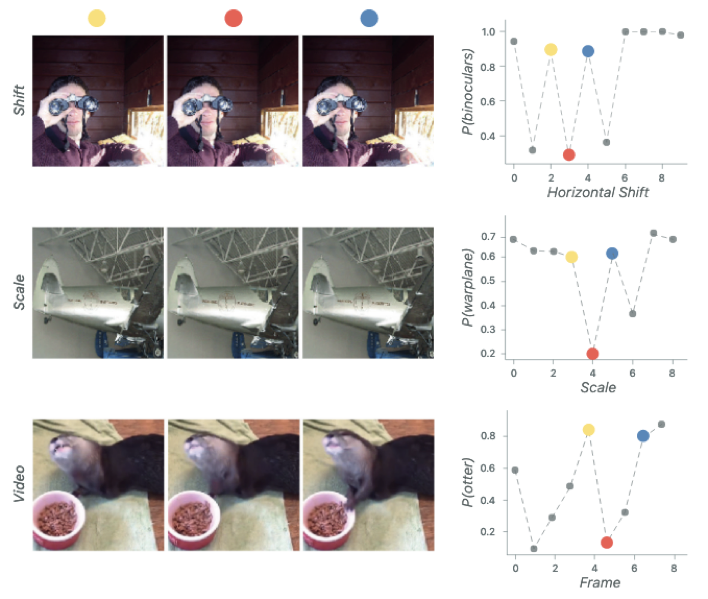
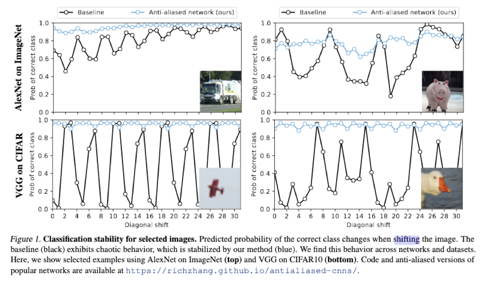
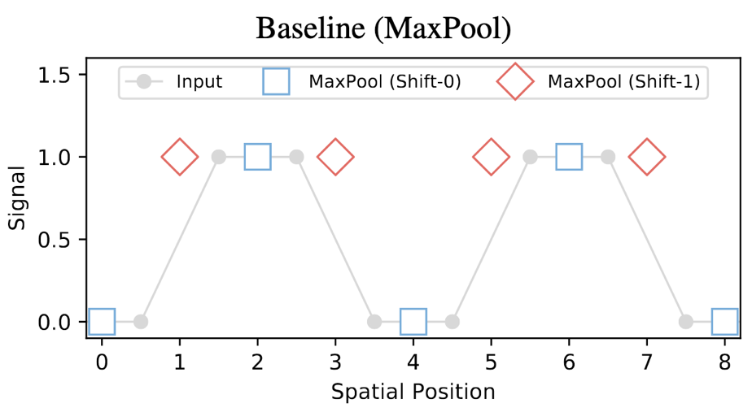
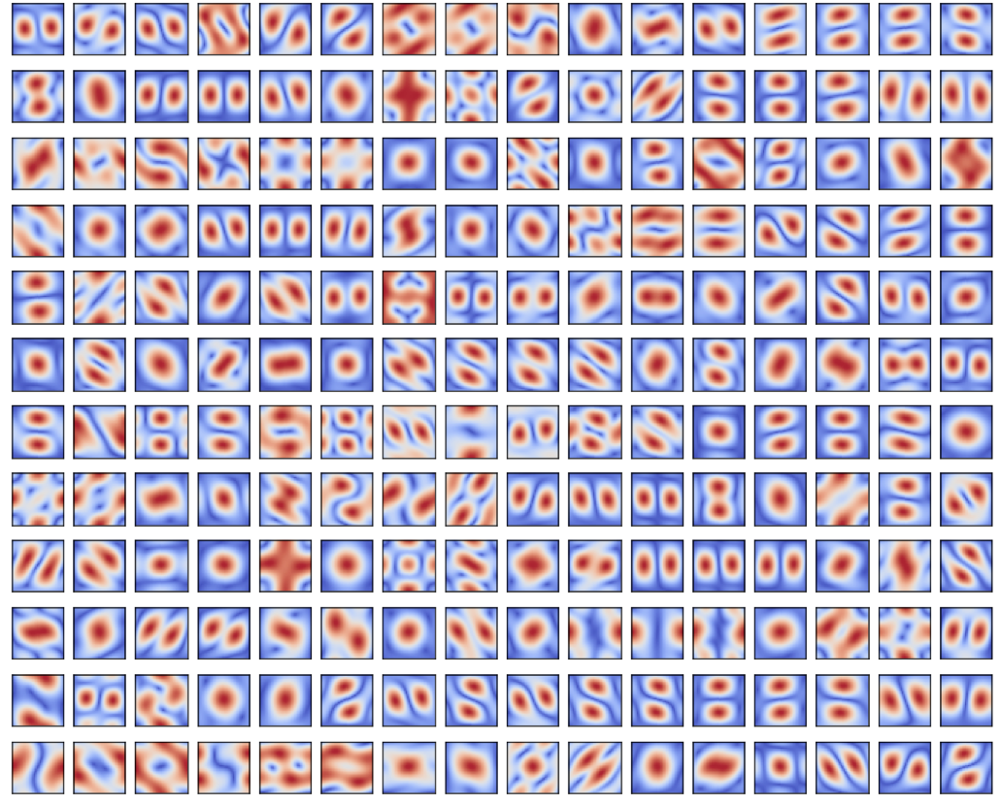
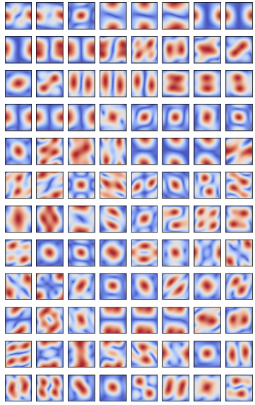
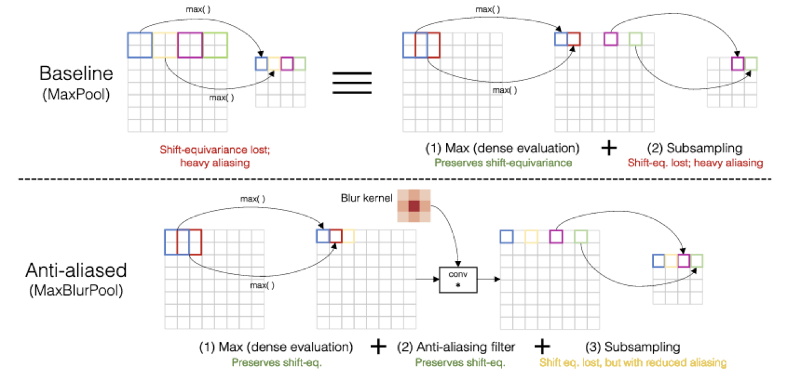
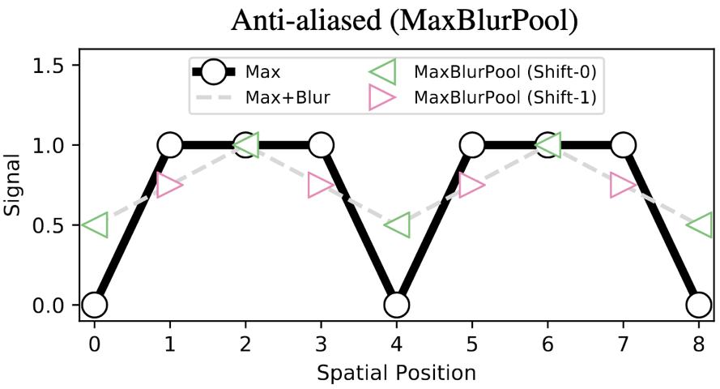
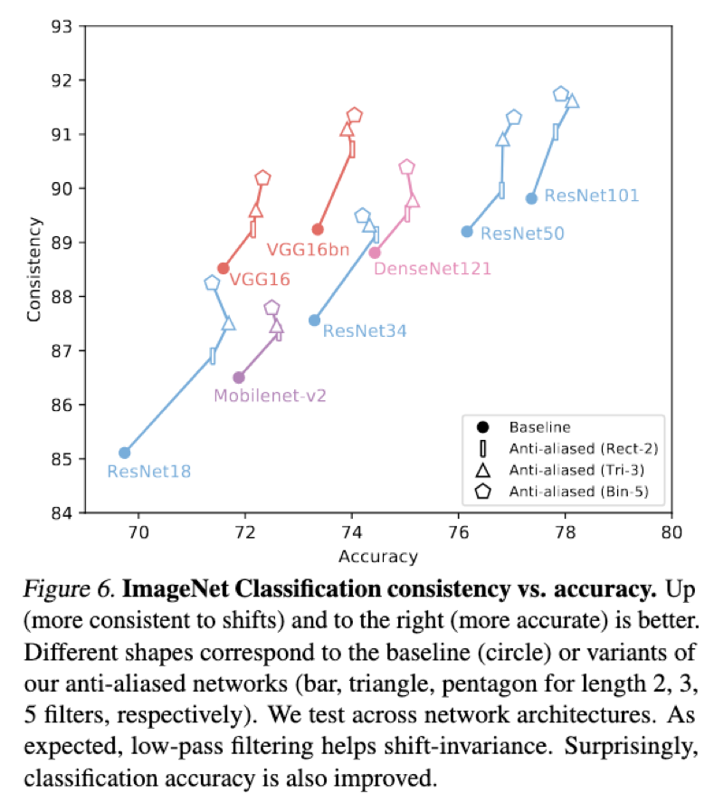
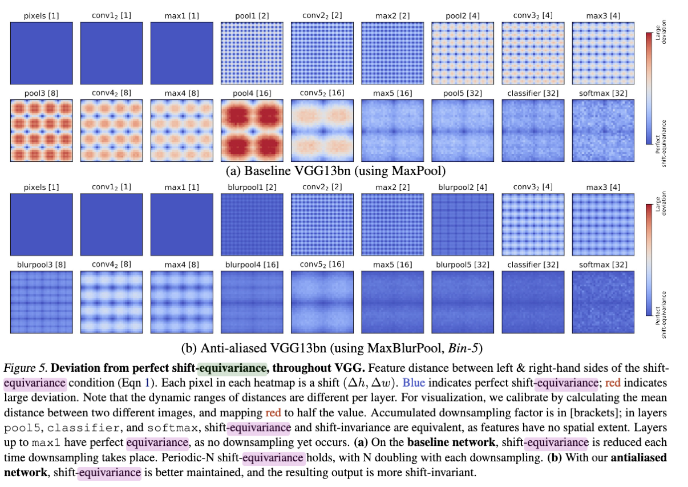

论文阅读：“快把卷积神经网络中的平移不变性带回来”
简介
这篇博客主要是我读论文Making Convolutional Networks Shift-Invariant Again的读书笔记，夹杂了自己直白和幼稚的理解。因为我相信所有的创意无论最后的结果多么复杂，最初的想法一定都是直观的。
卷积
其实说清楚这件事情，我们需要从卷积开始。 其实卷积（或者说滤波吧，两者差个卷积核的Flip，这里姑且混为一谈）操作本身是一个平移两个信号并且积分的操作，从定义本身就是可以做到平移不变的。 真正让卷积做不到平移不变的，是MaxPool。
计算资源的制约让我们一定要做Pool操作（准确的说是降采样），但是降采样的时候一定会丢失信息，例如步长为2的降采样就是丢掉一半的信息？
如果仅仅是丢掉一半的信息似乎还没有这么严重，因为图片中一些纹理的信息本身就是冗余的，丢了一半，还有一半，问题不大。
但是事实上是，我只是给图片稍稍平移了一下，我的模型就尼玛疯了。


邪恶的MaxPool
其实AvgPool都没有这个问题，为啥偏偏MaxPool有？既然有问题，为啥我们还偏偏要用MaxPool？

可以看到，仅仅是平移了一个像素，MaxPool的结果就有可能完全不同。
既然MaxPool这么不好，我们为什么还要用呢？因为我们需要。举个简单的例子：
我们需要的是这张图片分类，那么应该返回的是1（有猫），而不是猫占图片的面积比例。
一个频域上的解释是：MaxPool倾向于保留中高频信息，而网络的卷积核中，大多数是提取中高频信息的， 我尝试提取了VGG和MobileNet的部分卷积核，并且绘制了傅立叶变换以后的结果（仅保留幅度）。  
解决方案
那我么你怎么解决这个问题呢？

作者提出了，MaxPool可以看成Max+Pool（subsample）的组合，我在中间插入一个Blur Kernel（我感觉长得有点像高斯核）可以有效的抑制这个情况的发生。
从测试结果可以看出，加了Blur核的MaxPool情绪稳定多了：

而且最神奇的是，按照道理说，这样的处理可以增强平移不变性，但是会损失精度。 但是测试的结果居然是：精度也提升了。

Hack
作者测试了MaxPool和MaxBlurPool在不同的层的情况，可以看到，随着层数变深，平移引起的变化越发严重，而使用了MaxBlurPool以后，虽然不能完全消除印象，但是能减轻很多了。

作者的改动是，MaxPool的中间加入了一个Blur Kernel，而卷积的另外一个解释，则是加权平均。我们可以理解为，Max之后，在做了一个加权平均（Weighted-Avg）之后再做Pool。 我个人对此的理解是：我们需要高频数据，但是不需要那么高频的数据也可以。所以可以作出一个介于AvgPool和MaxPool之间的Pool来，在这个上面作出的模型，效果要好于单纯的使用MaxPool。